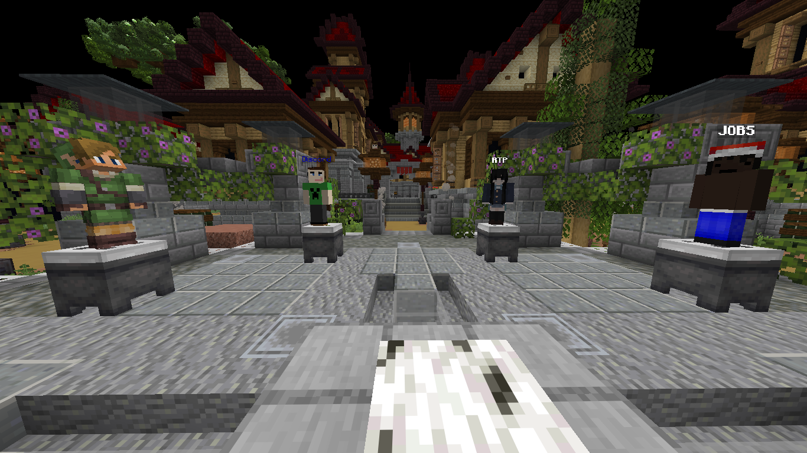
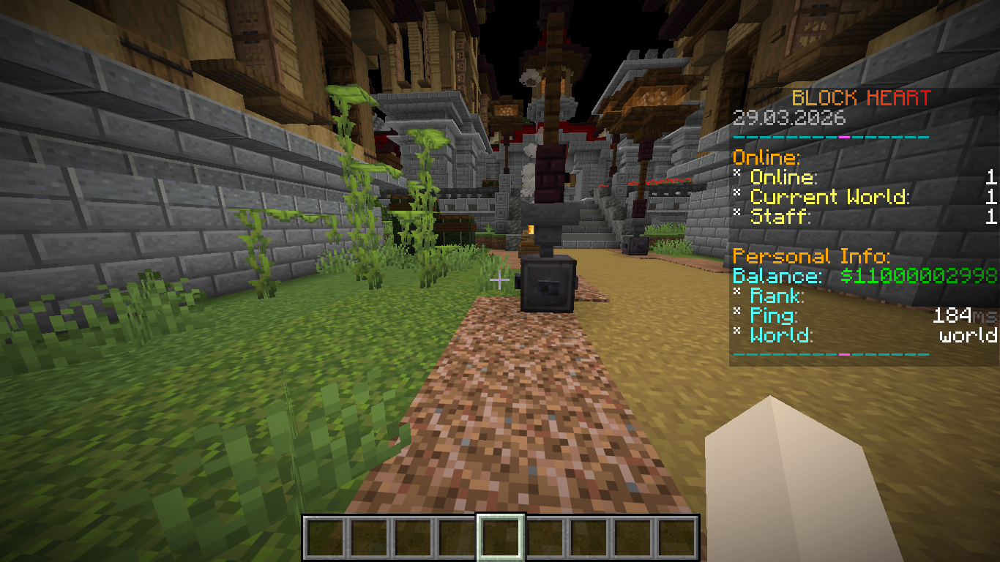
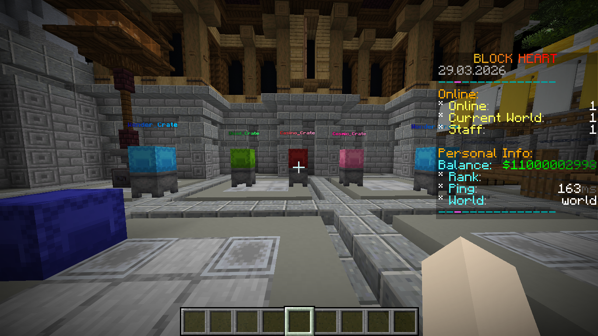

Synko_ is a solo freelance Minecraft developer who specializes in server setup, configuration, and system linking. From polished spawns to fully integrated server systems, each build is designed to feel smooth, professional, and complete.
Full setup using Paper, Spigot, or Fabric with optimized performance.
Advanced configs for Essentials, LuckPerms, TAB, crates, scoreboards and more.
Discord linking, permissions syncing, database setups, and cross-server systems.



Discord: synk0_.
Email: atharemanzi@gmail.com